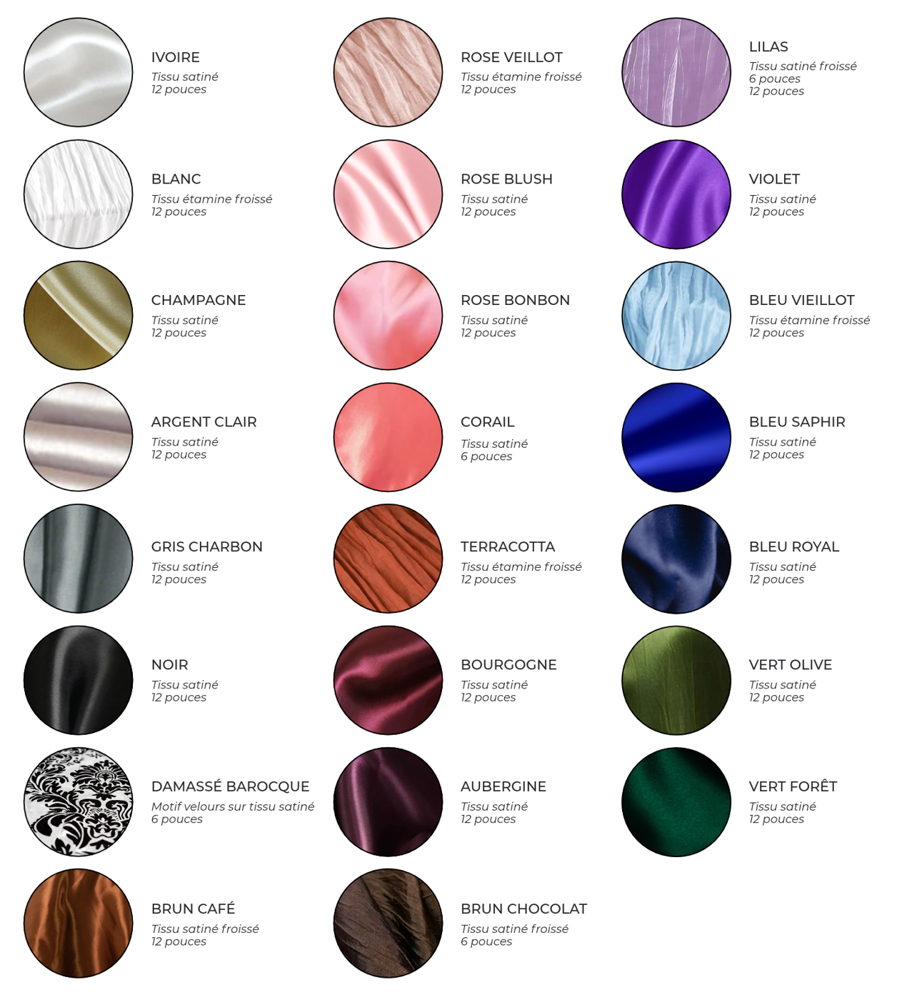
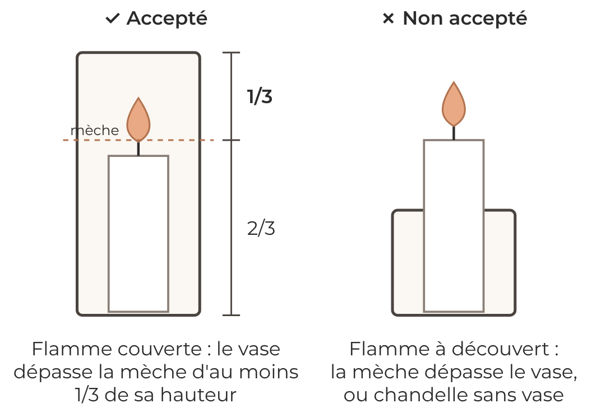

Tables nappées de blanc ou de noir (basses et cocktail), chaises
Salle de réception
Tables nappées de blanc ou de noir
Chaises Chiavari blanches et coussins
Chemins de table, au choix parmi nos 23 couleurs
Sous-assiettes dorées, couverts et verrerie
Serviettes de table en tissu blanc
Après la réception
Démontage et nettoyage régulier
Remisage de vos effets pour un ramassage facile le lendemain matin
Accès à votre salle
Le jour du mariage : dès 8 h, pour la décoration et l'aménagement.
Plus tôt ou la veille : possible selon notre calendrier d'événements. La réponse est confirmée seulement dans la semaine qui précède le mariage.
Fin de la réception : votre contrat prévoit l'utilisation de la salle jusqu'à 1 h, sans frais.
Prolongation jusqu'à 3 h : possible seulement dans la salle Phoenix et au Pavillon des Gallant, au coût de 450 $ l'heure, taxes et frais de service en sus. Elle peut être demandée à l'avance ou le soir même. La formule bar (bar payant, facture ouverte ou bar ouvert prolongé) est à prévoir avec votre coordonnatrice.
Fournisseurs : ils quittent la salle au plus tard 1 heure après la fin de la soirée.
Le bar après 1 h
Si vous prolongez la soirée et souhaitez garder le bar ouvert après 1 h, deux options s'offrent à vous :
Bar payant : chaque invité paie ses consommations.
Facture ouverte : vous vous portez garants des consommations de vos invités. Seuls les mariés peuvent l'autoriser, et le montant est réglé avant votre départ le lendemain matin.
Nos chemins de table
Vos chemins de table sont inclus avec votre forfait. Choisissez parmi nos 23 couleurs, en tissu satiné, satiné froissé ou étamine froissé. Ils mesurent 12 pieds de long et 6 ou 12 pouces de large selon le modèle.
Indiquez votre choix à votre coordonnatrice lors de la planification de votre réception.

Vos nappes, chemins de table et housses
Vous pouvez fournir vos propres nappes, chemins de table, serviettes ou housses de chaises. Apportez-les à l'Auberge au moins 14 jours avant le mariage : notre équipe de montage en a besoin pour préparer la salle. Des frais s'appliquent si les articles arrivent en retard.
Notre équipe installe sans frais vos nappes, chemins de table, serviettes de table en tissu et sous-assiettes, puisqu'ils remplacent les nôtres. Pour les housses de chaises, des frais d'installation supplémentaires peuvent s'appliquer.
Vos marque-places, et tout autre ajout à la mise en place offerte par l'Auberge (menus, petits cadeaux, décor de table, etc.), sont installés par vous ou votre personne de confiance. Notre équipe ne s'en charge pas.
Décoration : ce qui n'est pas permis
Pour la sécurité de tous et le respect des lieux, les éléments suivants ne sont pas permis à l'intérieur :
Confettis, maïs soufflé, plumes ou tout autre objet qui demande un grand ménage
Feux de Bengale et machines à fumée (même à base d'eau)
Feux d'artifice, sauf approbation de la municipalité de Sainte-Marthe et des propriétaires
Le non-respect des consignes peut entraîner des frais supplémentaires.
Chandelles et bougies

Aucune chandelle de cire ni bougie votive directement sur les tables. Elles doivent être dans un bougeoir ou un vase, et la flamme doit être couverte : le vase dépasse la mèche d'au moins le tiers de sa hauteur.
Faites approuver vos bougeoirs par votre coordonnatrice avant de les acheter : elle pourra aussi vous suggérer des solutions de rechange.
Après la réception
En fin de soirée, notre équipe rassemble vos articles sur une même table ou dans un même local. Récupérez-les le lendemain matin, au plus tard à 7 h 30 : comme pour vous la veille, les prochains mariés ont accès à la salle dès 8 h. Passé ce délai, l'Auberge n'est plus responsable des bris ou des vols, à moins de frais d'entreposage.